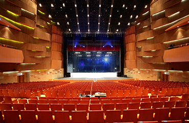
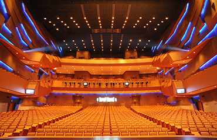

오페라 하우스
전위예술까지 아우르는 다목적 홀
성남아트센터 오페라하우스는 전통과 현대를 넘어 첨단 전위예술까지 아우르는 다목적홀로 설계되었다. 대형 오페라, 발레, 뮤지컬과 더불어 콘서트까지 수용하는 1,808석의 웅장한 공간 속에서 항시 역 동적이고 감동적인 몸짓과 소리로 채워지는 현대적인 극 장으로의 면모를 갖추고 건축 공간의 효율적인 활용과 최대의 안전성을 고려하였다. 무대예술을 다양하게 표현하기 위해서 음향을 섬세하게 전달하는 어쿠스틱 배너 커튼(Acoustic Banner Curtain) 8조가 설치되어 있고 기본홀의 잔향 1.6초를 기준으로 음향보정장치를 이용하면 잔향 시간을 최대 3초까지 조정 할 수 있기 때문에 모든 객석에서 최적의 음향효과를 감상할 수 있다. 백 스테이지 공간에는 10개의 VIP, 개인, 그룹 분장실 및 출연자 대기실과 지휘자실, 악장실이 있으며, 지상 3층에는 오페라, 국악, 연극, 무용, 연습실 등이 있어 장르별 연습이 가능하다.
- 
- 